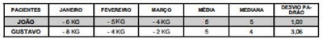
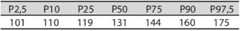
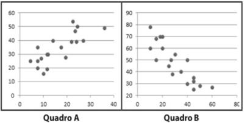
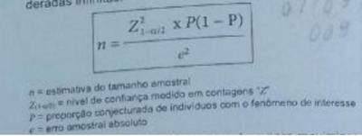
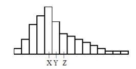

Questão 1 · valor p e intervalo de conf iança · 4000188287O que é intervalo de confiança?
A É uma forma de quantificar a incerteza ou a precisão do resultado de um estudo, principalmente do risco relativo apresentado por um valor denominado estimativa de ponto.
B É uma forma de qualificar as evidencias dos estudos e assim o médico pode tomar as melhores decisões para o paciente.
C É uma forma de dizer se o estudo não é replicável à populações exclusivas e assim nossos estudos devem ser realizados.
D É uma forma de dizer que a sensibilidade do teste realizado é baixa é por isso o resultado é um falso negativo.
E Todas as respostas estão erradas.
Questão 2 · Análise estatística · 4000187596Qual das seguintes alternativas é a menos relacionada ao poder estatístico de um estudo com desfecho dicotômico?
A Magnitude do efeito
B Erro tipo I
C Taxa de eventos de desfecho no grupo-controle
D Erro tipo II
E O teste estatístico utilizado
Questão 3 · Testes estatísticos · 4000187594Consiste em teste estatístico utilizado em pesquisa clínica para descrever o grau de uma associação
A r de Pearson - entre duas variáveis
B Coeficiente de regressão - entre dois desfechos
C Regressão logística - entre duas ou mais medidas
D U de Mann Whitney
E Nenhuma das anteriores
Questão 4 · Testes estatísticos · 4000187593Consiste em teste estatístico utilizado em pesquisa clínica para modelar os efeitos de variáveis múltiplas
A Azares proporcionais de Cox
B Qui-quadrado
C Exato de Fisher
D Teste F
E Teste K
Questão 5 · Medidas de Tendência Central e de Dispersão · 4000186671A análise descritiva de dados em bioestatística, além da construção de tabelas e gráficos, consistem também no cálculo de medidas que são úteis na produção da visão global dos dados. Medidas de tendência central resumem o conjunto de dados em um único número. São medidas de tendência central, EXCETO:
A Moda.
B Média.
C Amplitude.
D Mediana.
Questão 6 · Mensuração de variáveis · 4000184603Analise as variáveis de um estudo epidemiológico sobre diabetes mellitus a seguir: I - Ordinal: grau de instrução. II - Nominal: tipo sanguíneo e cor da pele. III - Contínua: número de pessoas portadoras de diabetes encaminhadas para avaliação oftalmológica. IV - Discreta. Valor da última hemoglobina glicada e IMC. Estão CORRETAS as afirmativas:
A I, II e III apenas.
B III e IV apenas.
C I e II apenas.
D I, II, III e IV.
Questão 7 · Variável discreta · Variável ordinal · Variável contínua · 4000184559Analise as seguintes variáveis de um estudo epidemiológico e seus exemplos. I. Ordinal: grau de instrução II. Nominal: cor da pele III. Contínua: IMC IV. Discreta: número de pessoas encaminhadas para a atenção secundária Apresentam uma correta correlação de variáveis e exemplos:
A I e II, apenas.
B III e IV, apenas.
C I, II e III, apenas.
D I, II, III e IV.
Questão 8 · Medicina Preventiva · 4000183171No Brasil, a tomada de decisão para o enfrentamento da pandemia de Covid-19 é um desa o devido sua grande extensão territorial, heterogeneidade demográ ca, social e econômica. Estudar a relação entre indicadores de saúde, demográficos, sociais, econômicos e a mortalidade por Covid-19 é de extrema importância neste contexto. Qual teste estatístico deve ser utilizado para verificar se a mortalidade por Covid-19 está relacionada com o número de leitos de UTI, Índice de Gini (numericamente, varia entre 0 e 1), Índice de Desenvolvimento Humano (numericamente, varia entre 0 e 1) e taxa de analfabetismo?
A Teste T de Student para duas populações independentes.
B Teste de Correlação de Pearson.
C Teste Qui-quadrado de Independência.
D Teste de McNemar.
Revisar: possível letra faltando em enunciado
Questão 9 · Estimativa e Parâmetro · 4000181785Avaliar se existe associação entre duas características quantitativas é objetivo de muitos estudos nas ciências da saúde. Um médico deseja avaliar se a pressão arterial está correlacionada à idade das pessoas. Para isso, ele deve utilizar
A a correlação linear simples.
B o teste Qui-Quadrado.
C a correlação curva de Chiari.
D o teste exato de Fisher.
Questão 10 · Amostragem · 4000190969Uma amostra para um estudo de incidência de erros medicamentosos foi obtida por meio do registro de cada décimo paciente internado em um hospital. Que tipo de amostra é essa?
A Amostra estratificada.
B Amostra de probabilidade.
C Amostra de conveniência.
D Amostra aleatória.
E Superamostra.
Questão 11 · Variável dicotômica · Tipos de variáveis · 4000190964Escolha a alternativa com o termo mais apropriado para o tipo de dado: Câncer recorrente/não recorrente 5 anos após o tratamento inicial.
A Intervalar - contínuo.
B Dicotômico.
C Nominal.
D Ordinal.
E Intervalar-discreto.
Questão 12 · Variável nominal · 4000189691Em um estudo epidemiológico, é CORRETO afirmar que a variável “tipo sanguíneo” é considerada:
A Nominal.
B Contínua.
C Ordinal.
D Discreta.
Questão 13 · Mediana · Média · Moda · 4000175812O que é média, moda e mediana
A A mediana de um conjunto de dados é encontrada somando-se todos os números do conjunto de dados e então dividindo o resultado pelo número de valores do conjunto. A moda é o valor do meio quando o conjunto de dados está ordenado do menor para o maior. A média é o número que aparece mais vezes em um conjunto de dados.
B Nenhuma das respostas abaixo
C A moda de um conjunto de dados é encontrada somando-se todos os números do conjunto de dados e então dividindo o resultado pelo número de valores do conjunto. A média é o valor do meio quando o conjunto de dados está ordenado do menor para o maior. A mediana é o número que aparece mais vezes em um conjunto de dados.
D Todas as opções
E A média de um conjunto de dados é encontrada somando-se todos os números do conjunto de dados e então dividindo o resultado pelo número de valores do conjunto. A mediana é o valor do meio quando o conjunto de dados está ordenado do menor para o maior. A moda é o número que aparece mais vezes em um conjunto de dados
Questão 14 · Moda · 4000175572Considerando as medidas de tendência central estudadas na bioestatística, um médico gestor deseja descobrir qual é o salário mais comum, isto é, qual é o salário recebido pelo maior número de médicos do hospital. Neste caso, ele deverá usar a
A variância.
B média.
C mediana.
D moda.
Questão 15 · Variável dependente x Variável independente · 4000175301Realizou-se um estudo epidemiológico com usuários de Centros de Atenção Psicossocial (CAPS) em um município do Rio Grande do Sul - Brasil, no ano de 2019. Os participantes do estudo foram submetidos à aplicação de um formulário pré- estruturado composto por perguntas acerca de dados sociodemográ cos, utilização dos serviços de saúde, condições de saúde e participação em atividades (variáveis independentes) e melhora percebida pelos usuários de CAPS a partir de sua inserção nesse serviço (variável dependente). A coleta de dados ocorreu no próprio CAPS durante uma única visita ao local. A definição de variável independente está relacionada:
A Apenas aos fatores de proteção.
B Apenas aos fatores de risco.
C Ao desfecho.
D À exposição.
E À variável resposta. ida oib pr ed
Revisar: possível letra faltando em enunciado
Questão 16 · Mediana · Média · Moda · 4000166858Na bioestatística, com relação à Distribuição Normal,
A sua origem está associada à atuação de John Snow, considerado o pai da epidemiologia moderna.
B a área total sob a curva e acima do eixo horizontal é igual a zero.
C a média é igual à mediana que é igual à moda.
D distribuições normais com o mesmo desvio-padrão e diferentes médias possuem a mesma localização, mas diferem quanto à forma.
Questão 17 · Medidas de Tendência Central e de Dispersão · 4000166618Sete homens foram pesados, e os resultados, em kg, foram: 57.0, 62.9, 63.5, 64.1, 66.1, 67.1, 73.6. A respeito das medidas dispersão e de tendência central, analise as afirmativas a seguir. I. A média é igual a 64.9 kg. II. A mediana é igual a 64,1 kg. III. A variância é igual a 16.6 kg. IV. O desvio-padrão é igual a 5.02 kg. Estão corretas as afirmativas
A I e III, apenas.
B II e IV, apenas.
C I, II e IV, apenas.
D I, II, III e IV.
Questão 18 · Outros tipos de gráf icos · Representação Gráf ica das Variáveis · 4000166388Em um estudo ecológico, é possível que um coe ciente de correlação seja apresentado. A esse respeito, analise o gráfico a seguir que foi exibido em um estudo desse tipo: De acordo com os dados, é possível concluir que:
A Não há correlação.
B A correlação é próxima de -1.
C A correlação é próxima de 1.
D A correlação é próxima de 0.
Revisar: possível letra faltando em enunciado
Questão 19 · valor p e intervalo de conf iança · 4000166275Em um estudo sobre amamentação e inteligência, de acordo com a escolha da mãe, 165 crianças que eram muito pequenas ao nascer receberam leite materno, enquanto 145 receberam fórmula infantil. Na idade de 8 anos, o quociente de inteligência (QI) dessas crianças foi medido. O QI médio do grupo fórmula infantil foi de 92,8, enquanto o do grupo leite materno foi de 103,0. Por meio de um teste de comparação de médias, veri cou-se diferença significante entre essas duas médias (p < 0,001). Com base nessas informações, assinale a alternativa correta.
A Se o tipo de leite ofertado não estiver relacionado ao QI subsequente, a probabilidade de se obter uma diferença no QI médio igual ou maior que a observada é menor do que 0,001.
B Há evidências causais de que a alimentação com fórmula para bebês muito pequenos reduz o QI aos 8 anos.
C O tipo de leite ofertado à criança não tem relação com o QI subsequente.
D A probabilidade de que o tipo de leite ofertado afete o QI subsequente é inferior a 0,001.
Questão 20 · Testes estatísticos · 4000166274O volume máximo de oxigênio inalado (VO₂ max) é usado como medida do condicionamento físico. Cem homens saudáveis participaram de uma pesquisa que objetivava verificar se o VO₂ max, em mililitros por quilograma de peso por minuto,diminui quando se aumenta o tempo, em minutos, de realização de atividade física. Qual teste estatístico poderia ser utilizado para verificar se o VO₂ max está relacionado com o tempo de atividade física?
A Teste de correlação de Pearson.
B Teste qui-quadrado de independência.
C Teste T para duas amostras dependentes.
D Análise de variância (ANOVA).
Questão 21 · Medidas de dispersão · 4000173689Um fator que in uencia a definição de normalidade é a curtose. Dentre as abaixo, marque aquela que não é uma classificação possível quanto à curtose.
A Mesocúrtica
B Platicúrtica
C Leptocúrtica
D Epicúrtica
E Nenhuma das anteriores
Questão 22 · valor p e intervalo de conf iança · Desviopadrão · 4000172199A respeito do planejamento de estudos na área da saúde, metodologia da pesquisa epidemiológica e medidas de ocorrência das doenças, avalie as afirmativas a seguir. I. Quanto mais estreito for o intervalo de con ança, maior a probabilidade de a média amostral estar próxima da média populacional. II. Desvio-padrão = raiz quadrada da média do quadrado dos desvios. III. Em um determinado local onde o Indicador de Swaroop Uemura é alto, pode-se a rmar que provavelmente o coeficiente de mortalidade infantil desse local deve ser alto. Estão corretas as afirmativas
A III apenas
B II e III, apenas.
C I e II, apenas.
D I e III, apenas.
E I, II e III.
Questão 23 · Conf iabilidade e Reprodutibilidade · 4000170273Na epidemiologia clínica, um conceito usado por médicos para descrever a extensão em que medidas de um fenômeno relativamente estável situam-se próximas uma da outra é denominada
A validade de critério.
B variabilidade biológica.
C variabilidade simples.
D validade de conteúdo.
E confiabilidade.
Questão 24 · Natureza das variáveis · Variável contínua · Tipos de variáveis · 4000170272O peso, a idade e a altura de um indivíduo são, correta e respectivamente, exemplos de variáveis
A contínua, discreta e discreta.
B contínua, discreta e contínua
C contínua, contínua e contínua.
D discreta, discreta e discreta.
E discreta, contínua e contínua.
Questão 25 · Desviopadrão · 4000147435Um grande estudo realizado no Brasil demonstrou que os níveis séricos de vitamina D apresentam distribuição normal na população brasileira, com média e variância iguais a 67,65 nmol/L e 9 nmol2/L2, respectivamente. Sabendo que o estudo teve uma amostra representativa, pode-se a rmar que 95% dos brasileiros apresentam valores de vitamina D que variam entre:
A 64,65 a 70,65 nmol/L.
B 50,01 a 85,29 nmol/L.
C 58,65 a 76,65 nmol/L.
D 61,77 a 73,53 nmol/L.
E 59,92 a 75,38 nmol/L.
Questão 26 · Desviopadrão · 4000146136Ao realizar o upload dos glicosímetros para análise dos gráficos ou diários de glicemias, é possível obter duas outras ferramentas para o controle glicêmico: o desviopadrão da média das glicemias e o tempo no alvo. O desvio-padrão avalia a variabilidade glicêmica, que, idealmente, deve ser inferior a 50 mg/dL ou de, no máximo, 1/3 da média das glicemias. Está correto que:
A Quanto menor o desvio-padrão, mais instável é a glicemia, muitas vezes produzindo HbA1c próxima dos valores ideais, às custas de muita hipoglicemia.
B Quanto maior o desvio-padrão, mais estável é a glicemia, muitas vezes produzindo HbA1c próxima dos valores ideais, às custas de muita hipoglicemia.
C Quanto maior o desvio-padrão, mais instável é a glicemia, muitas vezes produzindo HbA1c próxima dos valores ideais, às custas de muita hipoglicemia.
D Quanto maior o desvio-padrão, mais instável é a glicemia, muitas vezes produzindo HbA1c próxima dos valores ideais, às custas de raras hipoglicemias.
Questão 27 · Medicina Preventiva · Epidemiologia · Princípios de Estatística Bioestatística ou Estatística Médica · 4000145300As variáveis qualitativas também podem ser subdivididas em quais tipos de variáveis?
A Variáveis contínuas e variáveis nominais.
B Variáveis discretas e variáveis contínuas.
C Variáveis nominais e variáveis discretas.
D Variáveis nominais e variáveis ordinais.
Questão 28 · Medicina Preventiva · Epidemiologia · Medidas de dispersão · 4000145299Os pacientes João e Gustavo passaram por um processo de emagrecimento durante 3 meses. Após os 3 meses, o paciente que tivesse maior perda de peso seria contemplado com a cirurgia bariátrica. Em caso de empate, seria levada em consideração a maior regularidade na perda de peso durante os 3 meses. O quadro a seguir apresenta a perda de peso mensal dos dois pacientes durante os 3 meses, com a média, a mediana e o desvio padrão para cada paciente. Qual paciente foi contemplado com a cirurgia bariátrica?

A Gustavo pois obteve menor variação na perda de peso uma vez que sua mediana foi menor comparado a mediana de João.
B João, pois obteve resultados de média e mediana iguais, mostrando maior regularidade na perda de peso.
C Gustavo, pois obteve maior perda de peso no primeiro mês comparado a João.
D João, porque obteve menor desvio padrão.
Questão 29 · Medicina Preventiva · Epidemiologia · Medidas de dispersão · 4000145298Um hospital realizou um estudo com o intuito de descobrir a média, o desvio padrão e o coe ciente de dispersão da altura de seus funcionários. Chegou-se à conclusão que: média = 180cm; desvio padrão = 8cm. Qual o coe ciente de dispersão encontrado?
A 10%.
B 8%.
C 4,4%.
D 1,4%.
Revisar: possível letra faltando em enunciado
Questão 30 · Medidas de Tendência Central e de Dispersão · 4000145038Em trabalho prospectivo, visando estudar a potassemia (em mEq/L) de pessoas com e sem nefropatia, foram selecionados dois grupos de nove indivíduos. Nos controles, já em ordem crescente, os resultados obtidos foram 3,8 - 4, 1 - 4,3 - 4,3 - 4,3 - 4,5 - 4,5 - 4,8 - 5,0, a partir dos quais foram definidas a média, a mediana e a moda. Comparando-se os valores destas três expressões de tendência central, conclui-se que:
A a média e a moda são iguais
B a moda e a mediana são iguais
C a mediana e a média são iguais
D os três parâmetros diferem entre eles
E Os três parâmetros são iguais.
Questão 31 · Medicina Preventiva · Teste T · 4000144729Trinta jovens do sexo masculino, sadios, participaram de uma pesquisa cujo objetivo era verificar se a alcalose respiratória, induzida por hiperventilação voluntária, aumenta a capacidade física avaliada pelo tempo de corrida de 800 metros. Nesse estudo, os trinta indivíduos participaram da corrida de 800 metros em dois momentos: um deles em condições normais (sem hiperventilação) e outro após a hiperventilação. Que teste estatístico poderia ser utilizado para verificar se a hiperventilação aumenta a capacidade física?
A Teste Qui-quadrado de Pearson.
B Teste t de student pareado.
C Teste t de student para amostras independentes.
D Teste de Kolmogorov-Smirnoff.
Questão 32 · Teste quiquadrado · Medicina Preventiva · 4000144721Que teste estatístico poderia ser utilizado em um estudo que objetivasse verificar a associação entre faixa etária e óbito (sim ou não) pela COVID-19?
A Teste t de student para amostras independentes.
B Qui-quadrado de Pearson.
C Teste t de student pareado.
D Correlação de Pearson.
Questão 33 · valor p e intervalo de conf iança · 4000144093O que é intervalo de confiança?
A É o p-valor e demonstra que o estudo não tem validade.
B Demonstra que o estudo não tem validade externa.
C É uma forma de quantificar a incerteza (ou a precisão) do resultado de um estudo.
D Um número que demonstra viés de memória.
E Nenhuma das respostas acima.
Questão 34 · Teste quiquadrado · Medicina Preventiva · 4000144010O teste estatístico que correlaciona duas variáveis categóricas é:
A Qui-quadrado.
B T de student.
C Correlação.
D Regressão.
Questão 35 · valor p e intervalo de conf iança · 4000143725O Intervalo de confiança 95% é definido por:
A intervalo que indica o tamanho ou importância de um efeito observado.
B intervalo em se distribui 5% dos valores obtidos de um parâmetro na amostra estudada.
C intervalo em que há 95% de probabilidade de um dado resultado ter sido obtido de um "acaso".
D intervalo em que é permitido verificar com 95% de certeza a comparação entre médias de duas populações.
E intervalo em que a média de um parâmetro de uma amostra estudada tem uma probabilidade de 95% de acontecer.
Questão 36 · Erro alf a ou tipo 1 · 4000143532Em um ensaio clínico hipotético, o medicamento de cor vermelha mostrou-se e caz em relação ao medicamento de cor azul (p < 0,05). Entretanto, ao iniciarem a submissão do estudo a uma revista cientí ca, os pesquisadores perceberam que cometeram um erro. Após refazerem os cálculos, eles verificaram que a hipótese nula é verdadeira. Que tipo de erro é esse?
A Erro tipo II.
B Erro beta.
C Viés de memória.
D Viés de confusão.
E Erro alfa.
Revisar: possível letra faltando em enunciado
Questão 37 · Medicina Preventiva · Epidemiologia · Princípios de Estatística Bioestatística ou Estatística Médica · 4000143258Na abordagem comunitária, em geral, não é necessário estudar a população inteira para que sejam obtidas informações úteis sobre ela. Há vários métodos para selecionar uma amostra. Em um estudo que, por meio de uma lista de indivíduos, seleciona-se o primeiro indivíduo de forma aleatória e os demais por meio de um intervalo de seleção preestabelecido, o tipo de amostragem probabilística utilizado é:
A em múltiplos estágios
B aleatória estratificada
C aleatória simples
D sistemática
Questão 38 · Erro alf a ou tipo 1 · 4000143029Um pesquisador estuda o efeito do medicamento A sobre a glicemia. O intervalo de con ança de 95% da alteração média da glicemia dos pacientes que recebem placebo é de - 20mgldL ( +/- 7mgldL). A alteração média na glicemia dos pacientes recebendo o medicamento A é de 13mg/dL. O valor de P para comparação de placebo versus medicamento A é de <0,05. No entanto, sabemos que na realidade, o medicamento A não afeta a glicemia mais do que o placebo. Que tipo de erro estatístico ocorreu?
A Tipo I
B Tipoll
C Viés de seleção
D Viés de medição
Questão 39 · Erro alf a ou tipo 1 · 4000142583Ao se considerar o problema de comparação entre dois tratamentos, é usual xar como hipótese de interesse a inexistência de diferença entre os dois tratamentos comparados. Como frequentemente a comparação é feita entre um tratamento padrão e um tratamento novo, esta opção implica colocar o ônus da prova de efetividade no tratamento novo. Por essas razões, a hipótese a ser testada é usualmente chamada hipótese nula (H0), que deve ser comparada com uma hipótese alternativa, denominada H1. Em termos técnicos, a decisão de rejeitar H0, quando de fato H0 é verdadeira, é chamada de erro do tipo
A I.
B II.
C III.
D IV.
Questão 40 · Estimativa e Parâmetro · 4000142582Em uma análise descritiva, as variáveis categóricas são mais apropriadamente representadas pela seguinte representação gráfica:
A diagrama de barras.
B histograma.
C polígono de frequências.
D ogiva.
Questão 41 · Amostragem · 4000141867Sobre amostragem, assinale a alternativa CORRETA.
A A amostra do tipo por “conglomerados” é um exemplo de amostra probabilística.
B Amostra probabilística é aquela em que cada elemento da população tem uma probabilidade não conhecida de ser incluída na amostra.
C O sorteio é um dos mecanismos mais frágeis para a obtenção de amostras probabilísticas.
D A amostra estratificada por definição não é probabilística.
E A técnica de amostragem por cotas é probabilística.
Questão 42 · Natureza das variáveis · Medicina Preventiva · Variável discreta · 4000138704O número de filhos, o peso e a idade de um indivíduo são, respectivamente, exemplos de.
A variável contínua, variável discreta e variável discreta.
B variável contínua, variável contínua e variável contínua.
C variável discreta, variável contínua e variável discreta.
D variável discreta, variável contínua e variável contínua.
E variável discreta, variável discreta e variável contínua.
Questão 43 · Mediana · 4000132891Considere que sete homens foram pesados e os resultados, em kg, foram: 62,9; 64,1; 66,1; 57,6; 62,9;67,1 e 73,6. A massa mediana deles, em kg, é:
A 62,9.
B 64,1.
C 57,1.
D 64,9.
Questão 44 · Natureza das variáveis · Medicina Preventiva · Tipos de variáveis · 4000132881Em um estudo para diagnóstico situacional da área de abrangência, a variável “pacientes diabéticos” é:
A Nominal.
B Contínua.
C Ordinal.
D Discreta.
Questão 45 · Medicina Preventiva · Tipos de variáveis · 4000131312Os dados obtidos dos participantes de estudos médicos podem ser analisados e interpretados com o auxílio de métodos estatísticos. Nesse sentido, a organização e síntese de dados é importante. É um exemplo de variável categórica nominal:
A estadiamento de uma doença.
B sexo.
C número de indivíduos que compõe a família.
D valor da pressão arterial sistêmica.
Questão 46 · Erro alf a ou tipo 1 · 4000131041Um estudo realizado no ano de 2020 concluiu que o uso de determinada droga reduzia a evolução para formas graves de COVID-19 em 90%. Contudo, outros trabalhos confirmaram que a evolução para formas graves ocorria de forma espontânea, independente do uso do medicamento. Qual tipo de erro que pode ser atribuído a este estudo?
A Viés de aferição
B Efeito Hawthorne
C Erro alfa ou tipo |
D Viés de publicação
E Erro beta ou tipo I
Questão 47 · Desviopadrão · Amplitude · Variância · 4000129964Na análise descritiva de dados, são medidas de variabilidade,
A Moda.
B Amplitude.
C Desvio padrão.
D Variância.
Questão 48 · Tipos de variáveis · 4000129815A classificação de variáveis em categóricas ou numéricas é importante para:
A Escolher os melhores recursos para análise de sua distribuição e selecionar os testes estatísticos que serão empregados no estudo.
B Distinguir aquelas que têm distribuição normal daquelas que seguem o padrão de Moivre.
C Entender os valores de probabilidade, os quais indicarão, com maior chance, qual o valor típico de um conjunto de dados.
D Interpretar corretamente a taxa de falsos negativos e falsos positivos de um estudo de validação diagnóstica.
E Identificar valores extremos, que não devem ser considerados na avaliação de um conjunto de pacientes e seus parâmetros clínicos.
Questão 49 · Medicina Preventiva · Análise estatística · 4000129791O intervalo de confiança é um recurso muito utilizado em bioestatística para:
A Estabelecer a precisão de uma medida estimada no contexto de uma amostra.
B Excluir a possibilidade de viés de seleção nos estudos clínico-epidemiológicos.
C Favorecer a replicação de estudos que tenham refutado a hipótese nula.
D Indicar se os dados foram obtidos por meio de amostragem probabilística.
E Avaliar a concordância entre dois métodos de diagnóstico.
Questão 50 · Medicina Preventiva · Epidemiologia · Princípios de Estatística Bioestatística ou Estatística Médica · 4000129789As propriedades da distribuição normal ou curva de Gauss têm sido amplamente utilizadas na prática dos pro ssionais de saúde, pois:
A Servem para estabelecer critérios diagnósticos, baseados na noção de exatidão, ao invés do conceito de precisão estatística.
B Permitem predizer o resultado de intervenções clínicas, especialmente no caso de dados com curtose próxima a zero e coeficiente de assimetria ao redor de três.
C Se aplicam a um conjunto importante de variáveis antropométricas, demográficas e clínicas, incluindo parâmetros serológicos.
D Possibilitam identificar pacientes em situações extremas, cujos valores de algum parâmetro clínico situam-se entre –1 e +1 desvio-padrão da média.
E Fornecem informações valiosas sobre como se comportam quaisquer características dos pacientes acompanhados em algum serviço de saúde.
Questão 51 · Mediana · 4000129624Um tipo de gráfico útil para a descrição de dados, visualização de sua variabilidade e comparação entre diferentes grupos é o gráfico em caixas (boxplot). Para se construir um boxplot, obtêm-se primeiro algumas estatísticas. Entre elas, a mediana, que corresponde
A ao primeiro quartil (Q1).
B ao segundo quartil (Q2).
C ao terceiro quartil (Q3).
D à distância interquartílica (DQ).
Questão 52 · Medicina Preventiva · Tipos de variáveis · 4000129623Em uma análise descritiva, o estado civil de participantes de um estudo é um tipo de variável
A quantitativa discreta.
B quantitativa contínua.
C categórica ordinal.
D categórica nominal.
Questão 53 · Medidas de dispersão · 4000123506Os intervalos interquartílicos são medidas
A de tendência central utilizadas para descrever variáveis com distribuição assimétrica.
B de tendência central utilizadas para descrever variáveis com distribuição simétrica.
C de tendência central utilizadas para descrever exclusivamente variáveis com distribuição normal.
D de dispersão utilizadas para descrever variáveis com distribuição assimétrica.
E de dispersão utilizadas para descrever exclusivamente variáveis com distribuição simétrica.
Questão 54 · Testes estatísticos · 4000096517Um estudo constata que, em adultos, à medida que o consumo de carne vermelha aumenta, o mesmo ocorre com a incidência de câncer colo-retal. O que melhor descreve a relação entre consumo de carne vermelha e incidência de câncer colo-retal?
A Correlação positiva
B Interação variável
C Correlação negativa
D Variação concordante
Questão 55 · Testes estatísticos · 4000096418Observou-se que à medida que a cobertura vacinal da vacina anti-pneumocócica aumentou a incidência de otite média aguda diminuiu. Como a cobertura vacinal da vacina antipneumocócica e incidência de otite média aguda se relacionam?
A Interação variável.
B Correlação negativa.
C Correlação positiva.
D Variação concordante.
Questão 56 · Erro alf a ou tipo 1 · 4000096317Um pesquisador estuda o efeito do medicamento A sobre a glicemia. O intervalo de con ança de 95% da alteração média da glicemia dos pacientes que recebem placebo é de - 20 mg/dl +/- 7 mg/dl. A alteração média na glicemia dos pacientes recebendo o medicamento A é de 13 mg/dl. O valor de P para a comparação de placebo versus medicamento A é < 0,05. No entanto, sabemos que na realidade, o medicamento A não afeta a glicemia mais do que o placebo. Que tipo de erro estatístico ocorreu?
A Tipo I.
B Tipo II.
C Viés de seleção.
D Viés de medição.
Questão 57 · Moda · 4000095961Considere que o seguinte conjunto de dados representa os tempos de sobrevida(em anos) ao câncer de mama de uma determinada população: 2,4,3,1,5. Qual a moda dos tempos de sobrevida da população
A 0
B 2,5
C 3
D Não há moda nessa questão
E 3,5
Questão 58 · Média · 4000095941Considere que o seguinte conjunto de dados representa os tempos de sobrevida(em anos) ao câncer de mama de uma determinada população: 2,4,3,1,5. Qual a média dos tempos de sobrevida da população
A 2
B 3
C 3,5
D 1,5
E 2,5
Questão 59 · Medidas de dispersão · 4000094317Sendo responsável por uma Área de Saúde da Família em que a renda familiar per capita mensal se distribua como mostram a figura e tabela abaixo. Nessa população, qual proporção de pessoas vive em famílias com renda familiar mensal per capita maior ou igual a R$ 350,00?

A 2,5%
B 25%
C 75%
D (Média + desvio-padrão)/100
E É impossível saber com a informação disponível.
Questão 60 · Desviopadrão · 4000094239Sendo responsável por uma Área de Saúde da Família cuja população tem um Índice de Massa Corporal (IMC) médio de 22 kg/h² , com desvio-padrão de 2 kg/h² , com distribuição nessa população de forma normal, isto é, seguindo a “curva de Gauss”. Qual a probabilidade de que uma pessoa qualquer dessa população tenha um IMC maior que 26 kg/h²?
A 2,5%
B 5%
C 22%
D 25%
E 50%
Questão 61 · Testes estatísticos · 4000094146O tipo de variável e a forma de sua distribuição são características importantes para:
A A definição do tamanho de amostra a ser empregado na pesquisa.
B A escolha do teste estatístico mais adequado no caso em estudo.
C Determinar a amplitude dos intervalos de confiança.
D Calcular a medida de efeito que liga a exposição ao desfecho de saúde.
E Estimar o valor preditivo positivo para um teste diagnóstico.
Questão 62 · Princípios de Estatística Bioestatística ou Estatística Médica · 4000094038Assinale a alternativa que expressa a correta diferença entre os conceitos de “amostragem” e “amostra”.
A Amostra envolve o sorteio de sujeitos para uma investigação, ao passo que amostragem reflete o quanto um conjunto de indivíduos representa uma população.
B Amostra e amostragem são termos que se referem à mesma ideia (total de participantes do estudo), podendo ser utilizados de modo intercambiável.
C A amostragem é a triagem de indivíduos para um estudo de modo probabilístico e, por sua vez, amostra é a população de onde os indivíduos foram selecionados.
D Se, por um lado, amostragem implica incluir indivíduos num estudo de modo não probabilístico, por outro, amostra é sempre retirada aleatoriamente da população.
E Enquanto a amostragem corresponde à seleção de indivíduos para participar de um estudo, a amostra se refere aos participantes de uma pesquisa.
Questão 63 · Mediana · 4000086611Medidas de tendência central são muito utilizadas e estudos epidemiológicos visam identi car um valor representativo em torno do qual se agrupam os valores observados em uma amostra. Nesse âmbito, a medida que não sofre interferência de valores extremos é:
A a média
B a mediana
C o desvio padrão
D o coeficiente de variação
Questão 64 · Acurácia · Acurácia x Precisão · 4000076246Frequentemente nos referimos a um teste ou exame como padrão-ouro ou “gold standard”. Analise as afirmativas abaixo. I – Padrão-ouro representa a acurácia de um teste ou exame. II – Para doenças auto-limitadas os resultados de seguimento podem servir como padrão-ouro. III – Todas as condições clínicas possuem padrão-ouro para o diagnóstico. Assinale a alternativa CORRETA:
A Somente a afirmativa I está correta.
B Somente a afirmativa II está correta.
C Somente a alternativa III está correta.
D Somente as alternativas I e II estão corretas.
E Somente as alternativas I e III estão corretas.
Questão 65 · Variável discreta · 4000072899Assinale a alternativa que contém uma variável discreta.
A Peso.
B Estatura.
C Anos de escolaridade.
D Glicemia.
E Pressão arterial sistólica.
Questão 66 · valor p e intervalo de conf iança · Medicina Preventiva · Epidemiologia · 4000070970Em um estudo de coorte sobre diabetes como fator de risco para doença renal crônica, o risco relativo foi de 3,0; e o resultado foi estatisticamente significativo ao nível de p = 0,04. Em relação às informações apresentadas é correto a rmar que
A 4% dos pacientes com doença renal crônica tinham diabetes.
B De todos os pacientes diabéticos, apenas 4% desenvolveram doença renal crônica.
C O histórico de diabetes era 4% mais frequente entre os pacientes com doença renal crônica do que entre os que não desenvolveram a doença.
D Existe a possibilidade de 4% de que a associação observada entre a diabetes e a doença renal crônica seja devida ao acaso.
E O desenvolvimento de doença renal crônica foi 4% maior entre os pacientes com diabetes do que entre os não diabéticos.
Questão 67 · Mediana · 4000064711A medida menos afetada por valores extremos é:
A amplitude.
B mediana.
C média.
D desvio médio.
E desvio padrão.
Questão 68 · Mediana · 4000054390A medida MENOS AFETADA por valores extremos é:
A Percentil
B Média
C Mediana
D Desvio padrão
Questão 69 · Variável discreta · Variável contínua · Variável nominal · 4000047543O sexo, o número de doses de vacinas anteriormente aplicadas e o peso das crianças são, respectivamente, variáveis do tipo
A nominal, discreta e contínua.
B ordinal, discreta e discreta.
C discreta, discreta e discreta.
D ordinal, contínua e discreta.
E nominal, contínua e contínua.
Questão 70 · Mediana · Média · Moda · 4000047536A secretaria municipal de saúde de uma cidade brasileira registrou, nos últimos sete meses, a seguinte quantidade de doses de vacinas aplicadas contra o sarampo: 1.100; 1.400, 1.900, 1.700; 1.800; 1.100 e 800 doses. Quais são os valores da média aritmética, da mediana e da moda das doses de vacinas aplicadas nos sete meses, respectivamente?
A Os valores das três medidas são coincidentes.
B 1.400; 1.100; 1.100.
C 1.400; 900; 1.900.
D 1.400; 1.400; 1.100.
E Não é possível calcular uma das três medidas solicitadas.
Questão 71 · valor p e intervalo de conf iança · 4000036585O uso de uma amostra para fazer inferências sobre a população é vital para a pesquisa epidemiológica. Considerando esse contexto, analise as seguintes afirmativas e a relação proposta entre elas. I. O intervalo de confiança mais estreito é melhor que um intervalo de confiança mais amplo, PORQUE II. quanto mais estreito for o intervalo de con ança, maior a probabilidade de a média amostral estar próxima da média populacional. A respeito dessas afirmativas, assinale a alternativa correta.
A I e II são verdadeiras, e a II é uma justificativa da I.
B I e II são verdadeiras, mas a II não é uma justificativa da I.
C A I é verdadeira, e a II é falsa.
D A I é falsa, e a II é verdadeira.
Questão 72 · Mediana · Desviopadrão · Variância · 4000036492Na análise estatística de dados contínuos, é importante calcular as medidas de tendência central e as medidas de dispersão. A esse respeito, analise as seguintes associações. I. Variância: é a média do quadrado dos desvios. II. Desvio-padrão: é a raiz quadrada da variância. III. Mediana: indica o valor que aparece com maior frequência na amostra. Estão corretas as associações
A I, II e III.
B I e II, apenas.
C I e III, apenas.
D II e III, apenas.
Questão 73 · Variável discreta · 4000036487Em um estudo para avaliação de um serviço de saúde, a variável “Número de pessoas na la de espera para cirurgia eletiva” é
A nominal.
B contínua.
C ordinal.
D discreta.
Questão 74 · Quartis · 4000030083Na bioestatística, valores de x que dividem uma série ordenada de dados em quatro grupos, cada um reunindo 25% das observações, são:
A as modas.
B as medianas.
C os quartis.
D as somas dos postos.
Questão 75 · Mediana · 4000025935Os valores seguintes se referem ao peso de recém-nascidos em quilogramas: 2,9; 4,0; 2,1; 2,8; 3,2; 3,0; 3,1; 3,2; 3,5; 3,2. O resultado do cálculo da mediana desses valores é:
A 3,0.
B 3,10.
C 3,15.
D 3,20.
Questão 76 · Erro alf a ou tipo 1 · 4000024236Acerca dos conhecimentos de bioestatística, das políticas de saúde e dos conhecimentos médicos correlatos, julgue o item a seguir. O erro tipo 1, em um teste de hipóteses, consiste na rejeição da hipótese nula, quando ela é verdadeira.
A Certo.
B Errado.
Questão 77 · Desviopadrão · Amplitude · Variância · 4000014464Os dados obtidos em qualquer estudo devem ser analisados e interpretados com o auxílio de métodos estatísticos. A primeira etapa desta tarefa é a organização e a síntese dos dados. São medidas de variabilidade, EXCETO:
A Amplitude.
B Mediana.
C Variância.
D Desvio-padrão.
Questão 78 · Variância · 4000012347Considere três grupos de pacientes. No grupo A existem 9 pacientes hipertensos e um não hipertenso; o grupo B contém 5 hipertensos e 5 não hipertensos e no grupo C existem 7 hipertensos e 3 não hipertensos. O que podemos a rmar sobre a variabilidade da hipertensão nos três grupos?
A O grupo A varia mais do que o grupo B.
B O grupo B varia menos do que o grupo C.
C O grupo B varia mais do que os grupos A e C.
D O grupo A varia mais do que os grupos B e C.
E Os três grupos apresentam a mesma variabilidade.
Questão 79 · Amostragem · 4000007811Em geral, não é necessário estudar a população inteira para se obter o diagnóstico de saúde da comunidade. Nesse sentido, quando se faz uma lista de todos os indivíduos elegíveis para o estudo e sorteiam-se os elementos que farão parte da amostra, assinale a alternativa CORRETA sobre qual o método de amostragem:
A Amostragem aleatória estratificada.
B Amostragem em múltiplos estágios.
C Amostragem por conglomerados.
D Amostragem aleatória simples.
E Amostragem sistemática.
Questão 80 · Moda · 4000001347Em uma avaliação de 100 estudantes universitários, foram encontrados os seguintes resultados: O valor modal do número de irmãos é:

A 1
B 2
C 3
D 9
Questão 81 · Mediana · Teste quiquadrado · Desviopadrão · 4000128200Qual das estatísticas mencionadas a seguir é MENOS afetada pelos valores extremos?
A Amplitude.
B Desvio-padrão.
C Mediana.
D Qui-quadrado.
Questão 82 · Percentis · 40001281991.000 médicos realizaram uma prova nacional para obtenção de título em uma especialidade médica. Um candidato foi informado que seu desempenho 68 (de 100 pontos) correspondeu ao percentil 75. Isto significa que:
A 25% dos estudantes tiraram 75 ou menos.
B 250 candidatos tiraram 75 ou mais.
C 250 estudantes tiraram 68 ou mais.
D 75% dos candidatos tiraram 68 ou mais.
Questão 83 · Princípios de Estatística Bioestatística ou Estatística Médica · 4000113997O método universalmente empregado para avaliar a capacidade de generalização de dados considerados internamente válidos para uma população maior é
A a inferência estatística.
B a dedução lógica.
C a avaliação de aplicabilidade.
D o estudo de significância.
E o estudo de validade interna.
Questão 84 · Medidas de dispersão · 4000113187São exemplos de medidas de dispersão ou de variabilidade para uma amostra:
A média aritmética, moda e amplitude.
B desvio padrão, moda e média aritmética.
C mediana, moda e variância.
D moda, amplitude e variância.
E amplitude, variância e desvio padrão.
Questão 85 · Medidas de Tendência Central e de Dispersão · 4000113175São exemplos de medidas de tendência central:
A mediana, moda e desvio padrão.
B amplitude, variância e mediana.
C moda, variância e mediana.
D média aritmética, mediana e moda.
E amplitude, variância e desvio padrão.
Questão 86 · Percentis · 4000093321Abaixo são apresentados valores percentis de Pressão Arterial Sistólica (PAS) média de uma amostra probabilística de adultos de Florianópolis. Qual o valor de PAS que separa os 10% da amostra que apresentam os mais altos valores?

A 110.
B 131.
C 144.
D 160.
E 175.
Questão 87 · Princípios de Estatística Bioestatística ou Estatística Médica · 4000093298A interpretação adequada dos resultados de pesquisas é extremamente importante para que os médicos possam escolher os melhores procedimentos diagnósticos, melhores tratamentos e se manterem cienti camente atualizados. Desta forma, interprete os gráficos de dispersão e os resultados das correlações apresentadas abaixo nas figuras A e B: Assinale a alternativa correta em relação ao caso.

A O coeficiente de correlação no gráfico A, ao ser calculado, indicará valor positivo.
B Em ambos os casos existe baixa correlação entre as variáveis.
C No gráfico A, a relação entre as duas variáveis não se aproxima da linearidade.
D Ao ser calculado, o coeficiente de correlação dos dados do gráfico B provavelmente será próximo de zero.
E Nenhuma afirmação pode ser feita no gráfico B, pois existe grande dispersão dos pontos.
Questão 88 · Desviopadrão · 4000090492Em uma população adulta, observou-se que a média de pressão arterial diastólica era de 100 mmHg e o desvio padrão de 5 mmHg. Considerando que os valores estão dispersos em uma distribuição normal, espera-se encontrar, aproximadamente,
A 95% das observações entre 95 mmHg e 105 mmHg.
B 95% das observações entre 100 mmHg e 105 mmHg.
C dois terços das observações entre 95 mmHg e 100 mmHg.
D dois terços das observações entre 95 mmHg e 105 mmHg.
E dois terços das observações entre 100 mmHg e 105 mmHg.
Questão 89 · Percentis · 4000090474Em uma distribuição amostral, o valor P75 (percentil 75)
A indica que 25% dos valores estão abaixo desse valor e 75% acima.
B indica que 25% dos valores estão acima desse valor e 75% abaixo.
C equivale ao quartil 1.
D corresponde a 75% da média.
E corresponde a 75% do desvio padrão.
Questão 90 · Medicina Preventiva · Epidemiologia · Princípios de Estatística Bioestatística ou Estatística Médica · 4000072421Em um estudo com 9 adultos com obesidade mórbida, o peso em Kg observado foi:120, 122, 123, 125, 126, 128,128, 129 e 178. Qual a moda desta variável?
A 131
B 128
C 127
D 126
E 109
Questão 91 · Medicina Preventiva · Epidemiologia · Princípios de Estatística Bioestatística ou Estatística Médica · 4000072416Na pesquisa clínica, qual a classificação da variável "pressão arterial"?
A Categórica nominal
B Categórica ordinal
C Qualitativa discreta
D Quantitativa discreta
E Quantitativa contínua
Questão 92 · Variável discreta · Variável contínua · Variável nominal · 4000052730As variáveis sexo, Índice de Massa Corporal (IMC em kg/m²) e número de filhos são, respectivamente:
A Qualitativa ordinal, quantitativa contínua e quantitativa discreta.
B Qualitativa nominal, quantitativa contínua e quantitativa discreta.
C Qualitativa nominal, quantitativa discreta e quantitativa discreta.
D Qualitativa nominal, quantitativa contínua e quantitativa intervalar.
E Qualitativa ordinal, quantitativa contínua e quantitativa intervalar.
Questão 93 · Tipos de variáveis · 4000050616As variáveis idade da mãe, sexo e número de filhos tidos, respectivamente, são:
A quantitativa discreta; qualitativa ordinal; quantitativa discreta.
B quantitativa contínua; qualitativa nominal; quantitativa discreta.
C quantitativa discreta; qualitativa nominal; quantitativa discreta.
D quantitativa contínua; qualitativa nominal; quantitativa contínua.
E quantitativa discreta; qualitativa nominal; quantitativa contínua.
Questão 94 · Princípios de Estatística Bioestatística ou Estatística Médica · 4000050520Sobre a curva de distribuição normal (curva de Gauss), assinale a alternativa INCORRETA.
A A curva é simétrica, unimodal e tem forma de sino.
B Numa distribuição aproximadamente normal a média, a mediana e a moda coincidem.
C Numa distribuição assimétrica, a mediana é mais representativa que a média.
D A área correspondente a dois desvios-padrões para ambos os lados da média corresponde a cerca de 95,5%.
E A duração da gravidez humana tem uma distribuição normal.
Questão 95 · Mediana · Média · Moda · 4000047973Para a apresentação e a síntese de variáveis quantitativas (por exemplo, idade, peso, glicemia), são utilizadas medidas de tendência central, das quais as mais utilizadas são a média aritmética, a mediana e a moda. Sobre essas medidas, é incorreto afirmar que:
A A média utiliza os dados observados na amostra estudada.
B A mediana é muito afetada por valores extremos ou discrepantes
C A moda representa o valor mais frequentemente observado.
D Pode ser observada mais de 1 moda em uma amostra.
E As medidas de tendência central devem ser apresentadas juntamente com medidas de dispersão dos dados.
Questão 96 · Mediana · 4000025197Para a amostra de dados de hematócrito: 45,43, 45, 46, 52, 50, 47, 44, 51, a mediana é:
A 44.
B 45.
C 46.
D 47.
Questão 97 · Acurácia x Precisão · 4000020894Precisão e acurácia são duas propriedades fundamentais das medidas em estudos epidemiológicos. Entre os conceitos relacionados a elas, é CORRETO afirmar que:
A Precisão é a capacidade de refletir a realidade da população e acurácia é a proximidade entre o valor medido e o real.
B Precisão é uma propriedade influenciada pelo método de seleção da amostra e acurácia é determinada pelo cálculo do seu tamanho.
C Precisão é a propriedade de impedir a ocorrência de erros aleatórios e acurácia é a propriedade de impedir erros sistemáticos.
D Precisão pode ser estimada pela crítica aos métodos e acurácia pela observação das estimativas por intervalo.
Questão 98 · valor p e intervalo de conf iança · 4000005999Indivíduos com obesidade grau 3 (N = 252) foram randomizados para dois tipos de dietas: restrição de carboidratos ou restrição de gorduras. A análise estatística mostrou que os indivíduos que seguiram a dieta com restrição de carboidratos apresentaram perda média de peso de 5,8 kg (desvio padrão = 3,0 kg) enquanto aqueles submetidos à dieta com restrição de gorduras apresentaram perda média de peso de 3,5 kg (desvio padrão = 5,0 kg). Comparando- se a perda média de peso entre esses dois grupos obteve- se um valor de p = 0,003. Adotando- se um nível de signi cância de 5% ( esse valor de p apresentado significa que:
A Existe diferença estatisticamente significante entre os grupos, pois 99,7% dos indivíduos do grupo da dieta com restrição de carboidratos perderam mais peso do que os indivíduos que seguiram a dieta com restrição de gorduras.
B Existe diferença estatisticamente significante entre os grupos para a média de perda de peso e o poder associado ao teste estatístico é igual a 99,7%.
C Não existe diferença estatisticamente significante entre os grupos no que se refere à perda média de peso e o erro que se comete com esta afirmação é igual a 0,3%.
D Não existe diferença estatisticamente significante entre os grupos no que se refere à perda média de peso, pois a diferença média de peso entre os grupos é de apenas 0,3%.
E Existe diferença estatisticamente significante entre os grupos no que se refere à perda média de peso e o risco de errar ao se afirmar que os dois grupos diferem com relação à perda de peso é igual a 0,3%.
Questão 99 · valor p e intervalo de conf iança · 4000005902Um pesquisador está interessado em estudar a associação entre hábito de fumar da mãe (sim/não) e o baixo peso ao nascer do bebê (sim/não). Ao revisar a literatura, encontrou quatro diferentes estudos com os seguintes intervalos de 95% de con ança para a medida de associação razão de chances (odds ratio): (I) 0,8 a 0,9; (II) 0,8 a 1,2; (III) 1,2 a 4,1; (IV) 0,5 a 20,5; Adotando-se um nível de signi cância de 5%, qual ou quais desses intervalos de con ança para a razão de chances indica (m) associação entre baixo peso ao nascer e hábito de fumar da mãe?
A Somente (I).
B (I) e (III).
C Somente (II).
D (II) e (IV).
E (I), (III) e (IV).
Questão 100 · Mediana · 4000125424Assinale a alternativa que apresenta o valor de X no conjunto de valores 1; 4; X; 7; 5; 3; 1; 8; 9; 2; 7 para que a mediana seja 5.
A 5
B 1
C 3
D 0
E 4
Questão 101 · Medicina Preventiva · Amostragem · 4000124518Ao calcular o tamanho amostral em um estudo de delineamento transversal, mesmo após extensa revisão de estudos desenvolvidos com populações similares, um pesquisador não encontrou dados acerca da proporção de indivíduos com o fenômeno de interesse. A fórmula utilizada, reproduzida abaixo, foi para populações consideradas infinitas. Assim, uma postura mais conservadora para maximizar a estimativa do tamanho amostral seria

A 10%.
B 25%.
C 50%.
D 75%.
E 100%.
Questão 102 · Medicina Preventiva · Média · 4000124517Um pesquisador estava interessado em verificar se havia diferença estatisticamente significativa nos níveis de colesterol LDL entre homens e mulheres de uma amostra em um estudo transversal. Os níveis de colesterol foram considerados uma variável quantitativa contínua. O procedimento inicial mais adequado desse estudo para comparar as médias dos dois grupos deveria ser aplicar
A O teste t para amostras independentes.
B O teste t para amostras dependentes.
C o teste de Mann-Whitney
D Um teste de qui-quadrado para a distribuição de valores de colesterol LDL em um grupo e, em seguida, no outro grupo.
E Um teste de normalidade para a distribuição de valores de colesterol LDL em um grupo e, em seguida, no outro grupo.
Questão 103 · Medicina Preventiva · Variável contínua · 4000121750Assinale a alternativa que cita a intensidade de correlação entre as variáveis analisadas em um estudo de regressão linear.
A Teste correlação de Mann-Whitney.
B Teste de Kruskal-Wallis.
C Regressão pelo método dos quadrados mínimos.
D Coeficiente de correlação de Pearson.
E Teste de Wilcoxon.
Questão 104 · Mediana · Medicina Preventiva · 4000083627Analise as seguintes assertivas em relação à distribuição normal e seus elementos característicos e assinale V, se verdadeiras, ou F, se falsas. ( ) Tem um eixo de simetria; ( ) A média aritmética, a mediana e a moda coincidem no mesmo valor pelo qual passa o eixo de simetria; ( ) A distância entre o eixo de simetria e os pontos de inflexão da curva equivalem ao desvio-padrão; ( ) É assintótica ao eixo "x" (abscissas), isto é, seus extremos se aproximam cada vez mais do eixo horizontal, sem nunca tocá-lo. A ordem correta de preenchimento dos parênteses, de cima para baixo, é:
A F - F - F - F.
B V - F - V - V.
C V - V - F - V.
D F - V - V - F.
E V - V - V - V.
Questão 105 · valor p e intervalo de conf iança · Medicina Preventiva · Epidemiologia · 4000078126Numa publicação em revista médica brasileira conceituada, autores a rmam que o risco relativo de adquirir sí lis congênita sob determinadas condições de parto em uma capital estadual da região Sudeste foi de 0,97 (intervalo de con ança de 95% entre 0,92 e 1,18). Isto indica que, estatisticamente, o risco de sífilis congênita é:
A 18% maior.
B Igual.
C Menor
D 8% menor.
E Maior
Questão 106 · Análise multivariada · Análise multivariada · 4000078007Durante a análise descritiva de uma amostra, o método mais eficaz de abordagem de mais de uma variável é:
A Análise multivariada.
B Análise univariada.
C Padronização.
D Randomização
E Teste qui-quadrado.
Questão 107 · Medidas de Tendência Central e de Dispersão · 4000071234Calcule a moda, a média e a mediana das alturas dos seguintes alunos (valores em metros): A = 1,20; B = 1,21; C = 1,23; D = 1,25; E = 1,26; F = 1,28; G = 1,28; H = 1,29 e I = 1,80.
A 1,26; 1,28 e 1,31.
B 1,28; 1,31 e 1,26.
C 1,31; 1,26 e 1,28.
D 1,26; 1,31 e 1,28.
E 1,28; 1,26 e 1,31.
Questão 108 · Medidas de dispersão · 4000053378Qual das alternativas abaixo apresenta apenas medidas de dispersão:
A Moda, desvio padrão e variância
B Amplitude, desvio padrão e variância
C Mediana, desvio padrão e variância
D Amplitude, moda e variância
E Moda, amplitude e desvio padrão.
Questão 109 · Desviopadrão · 4000044275Numa distribuição de dados semelhantes à Curva Normal, quantas observações se estimam encontrar, aproximadamente, entre ± 2 desvios-padrão?
A 16,0%
B 34,0%
C 68,0%
D 95,0%
E 99,0%
Questão 110 · Medidas de dispersão · 4000038000As medidas de dispersão são utilizadas para resumir dados e têm por objetivo indicar quão diferentes são os indivíduos em uma amostra. A medida calculada pela fórmula s = (raiz quadrada de s²) é denominada:
A erro padrão da média.
B variância.
C desvio padrão.
D erro padrão.
Questão 111 · Medidas de Tendência Central e de Dispersão · 4000037827Entre as medidas utilizadas para sintetizar dados, encontram-se aquelas de tendência central, que indicam o centro de uma distribuição, em geral, de uma amostra. A esse respeito, numere a COLUNA II de acordo com a COLUNA I, fazendo a relação das medidas a seus respectivos conceitos. COLUNA I: 1. Média; 2. Mediana; 3. Moda. COLUNA II: ( ) Indica o valor que aparece com maior frequência na amostra.; ( ) É o ponto central da distribuição, que é obtido após todas as observações serem colocadas em ordem crescente (ou decrescente), de acordo com o seu valor.; ( ) É a soma de todos os valores dividida pelo número de amostras. Assinale a sequência CORRETA.
A 1 2 3
B 3 2 1
C 2 3 1
D 2 1 3
Questão 112 · Medidas de Tendência Central e de Dispersão · 4000007625Assinale a alternativa que preenche corretamente os espaços em branco. O gráfico abaixo representa a distribuição de valores de colesterol sérico (mg/dl). Observa-se que é uma distribuição e . É mais provável que a média e a mediana dessa distribuição estejam, respectivamente, nos pontos e

A Assimétrica, unimodal, Z, Y.
B Simétrica, bimodal, X, Y.
C Assimétrica, unimodal, X, Y.
D Assimétrica, unimodal, Y, Z
E Simétrica, bimodal, Z, Y.
Questão 113 · Medidas de Tendência Central e de Dispersão · 4000006599Considere as quatro afirmações abaixo: I- A média aritmética é muito afetada por valores extremos; II- A mediana é pouco afetada por valores extremos; III- Pode haver nenhuma, uma, ou mais que uma moda; IV- O desvio-padrão é a raiz quadrada da variância. Pode-se dizer que:
A Apenas três são corretas.
B Apenas duas são corretas.
C Apenas uma é correta.
D As quatro são corretas.
E Nenhuma é correta.
Questão 114 · Teste quiquadrado · Medicina Preventiva · 4000106327O que é e para que serve teste de qui-quadrado? Respostas: 1 12 23 34 45 56 67 78 89 100 111
A É um teste estatístico utilizado para diferenciar medianas.
B É um teste estatístico utilizado para diferenciar médias.
C É um teste estatístico utilizado para diferenciar proporções.
D É um teste paramétrico utilizado para diferenciar médias.
E É um teste paramétrico utilizado para diferenciar medianas.